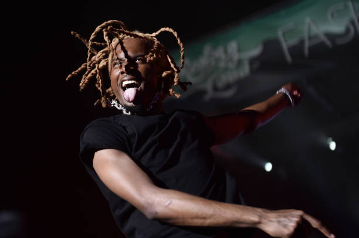

ABOUT
Playboi Carti or Jordan Carter if you want to address him by his government name, is the Greatest Rapper of all Time. Now you might wonder why i say this, i mean to the average music listener, this man can barely make a full sentence or word in his music. But trust me, that's the beauty of Carti. He sparks inspiration in the music industry by doing things out of the ordinary. He has a unique flow on the beat which you can't help but just vibe to. One of his popular songs "Magnolia" released back in 2017 was such a sensational track. The beat drives you to bop your head to the melodic rythm at the start of the song, by the middle of it, you would be up on your feet dancing. I wouldn't say Magnolia is my favourite Carti song though. My favourite Carti song is "Flatbed Freestyle" from my favourite album of his "DIE LIT" released in 2018. I couldn't stop stop playing this song when i first found the album on spotify. I mean, i can barely hear or understand the lyrics but it's still such a dope song, that's why Carti is the GOAT. Oh My God i'm listening to it right now. My favourite line from the song "that gun on me, i cannot lack". Such a sensational bar. This clearly depicts Carti's concern for the youth as he preaches on protection of oneself from those that may try to harm us.
My second favourite song from the the album is "Lean4real". In this song of the angels, Carti worked with UK rapper Skepta to deliver such a banging track. In this song, Carti preaches about how he really is on lean. In the chorus, Carti keeps repeating the words "i'm on 'em beans for real, i'm on the lean for real"(I just checked the lyrics on spotify, i had no idea those were the lyrics). As i was saying, Carti is merely repeating the same sentence, but due to a mixture of a dope beat, rhythm, adlibs and autotune, one of the greatest choruses in music history is formed. Only Jordan Carter himself can accomplish such a feat.
.jpeg) My third favourite song from the Die Lit album is "Shoota". In this legendary track, PlayGoat Carti collaborated with another
artist of not such great talent in my opinion, Lil Uzi Vert. But i must commend Uzi for for doing his job well of setting up Carti to
absolutely destroy the track. The song starts off with Uzi talking about some "Now it's my time". I was like what the hell is this
song bro. I honestly thought the song was trash and i would've just skipped but i couldn't because i knew Carti the Goat himself was
in the song and about to deliver some heat. As soon as Mid Uzi vert finished his verse with "know i had to let her go 'cause she can't
arrest me", the beat drops and Carti comes in with one of his most iconic lines "woke up with my toolie, what it do?". Every true Playboi
Carti fan would get nothing but goosebumps at this part. Carti then proceeds to obliterate the rest of the song. A lister would forget
that Uzi was ever in the track, this is simply the power of Carti, no one can perform at an equal level with him but yet he chooses to
work with these mid level artists, such a humble guy.
My third favourite song from the Die Lit album is "Shoota". In this legendary track, PlayGoat Carti collaborated with another
artist of not such great talent in my opinion, Lil Uzi Vert. But i must commend Uzi for for doing his job well of setting up Carti to
absolutely destroy the track. The song starts off with Uzi talking about some "Now it's my time". I was like what the hell is this
song bro. I honestly thought the song was trash and i would've just skipped but i couldn't because i knew Carti the Goat himself was
in the song and about to deliver some heat. As soon as Mid Uzi vert finished his verse with "know i had to let her go 'cause she can't
arrest me", the beat drops and Carti comes in with one of his most iconic lines "woke up with my toolie, what it do?". Every true Playboi
Carti fan would get nothing but goosebumps at this part. Carti then proceeds to obliterate the rest of the song. A lister would forget
that Uzi was ever in the track, this is simply the power of Carti, no one can perform at an equal level with him but yet he chooses to
work with these mid level artists, such a humble guy.

So far i've only talked about my three favourite songs from just one of his albums, We haven't even discussed his most recent album "Whole Lotta Red" released in 2020. I recommend the song "Sky". This album really shows the true magnitude of Carti's genius. But i won't get into it right now as i have to say goodbye. I hope this webpage has succeeded in introducing to you a different taste in music. But then again, if you don't vibe with Carti's music, then you just a lame. Peace.